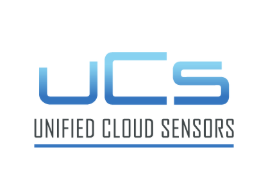
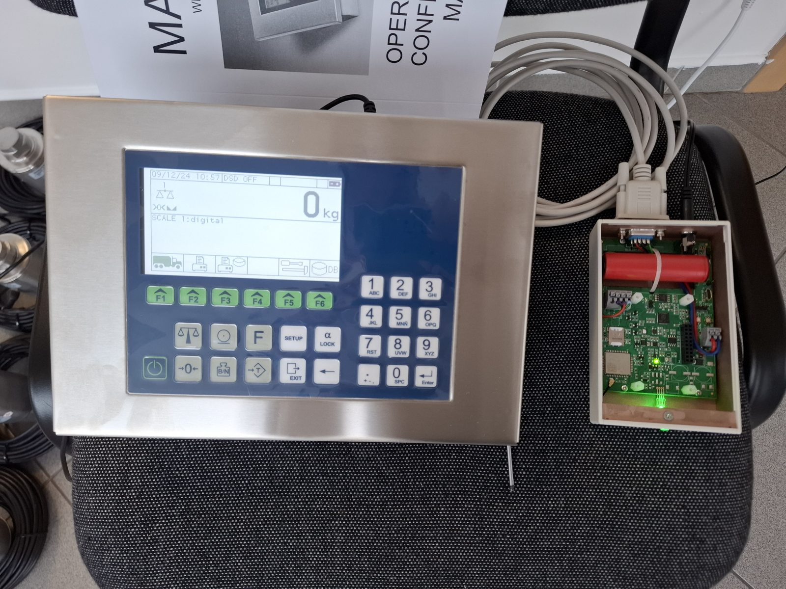

SensBELTStop Paying for Air on Your Conveyor
Your belt doesn't know the difference between 500 tonnes/hour and zero. But your electricity bill does.
PATENTED · EP 4 524 526The most expensive machine that does nothing
WITHOUT SensBELT
- Belt keeps running after last truck dumps — nobody notices for 45 minutes
- This happens 3–4 times per shift
- 75 kW drive running empty for 3 hrs/day × 320 days × €0.18/kWh = €12,960/yr wasted
- Accelerated belt and roller wear: another €21,600/yr
- No way to check if belt scale is still accurate without a site visit
WITH SensBELT
- Empty belt detected automatically — shutdown signal after 5 minutes
- Calibration drift tracked continuously — no technician visits needed
- Throughput verification visible from your phone
A quarry discovered 847 hours of ghost running per year
A medium-size aggregate quarry, two belt scales feeding a crusher. Operators assumed belts ran only when trucks were dumping. The control room had no belt load visibility — just ON/OFF status.
SensBELT found that Belt #1 ran empty for an average of 2.65 hours per day. Over the year: 847 hours of ghost running. Energy wasted: €11,430.
Belt wear equivalent: 14 months of additional degradation — meaning the €38,000 belt replacement came 14 months early.
Solution: automatic idle-shutdown logic (if belt carries no weight for 5 minutes → shutdown signal to VFD). Ghost running dropped to near zero in Week 2.

Plugs into your existing belt scale
Connect
One device plugs into your indicator's RS-232/485 port. No belt stoppage, no recalibration.
Transmit
UCS-X3 sends data via secure wireless link. Additional sensors available: temperature, vibration.
See
Live throughput, empty-belt detection, calibration drift alerts, energy analytics — from any device.
Running in 2 hours. No belt stoppage. No recalibration needed. One device, one cable.
See every tonne, every minute
"Tuesday 14:00–16:45 — belt ran at 12% capacity. Why?"
Historical trends reveal inefficiency patterns your control room can't see.
Is your belt scale still accurate?
Your indicator says "342 t/h"
But is it? SensBELT checks continuously — so you don't have to send a technician to find out.
What SensBELT tracks
- Zero drift — does the belt read 0 when empty?
- Span deviation — is the full-scale reading still correct?
- Signal noise — is the load cell degrading?
- Disconnection and overload events — logged and timestamped
Based on current degradation pattern, LC2 will exceed ±0.5% accuracy threshold in approximately 6 weeks. Schedule calibration.
36 days to full payback
Investment breakdown
- UCS-X3 Edge Gateway: €600
- Dashboard setup: €800
- Annual service: €1,188
- Verified annual savings: €26,496/year
- Payback period: 36 days
- Year 1 ROI: 924%
Prove it on your busiest conveyor
Prove it on your busiest conveyor
Free 30-day pilot on your most-used belt — we lend you the system for a month at no cost. If we don't find wasted hours — walk away.
Kill ghost running
Automatic empty-belt detection, energy savings from Day 1. Stop burning money on air.
Protect measurement accuracy
Continuous calibration check without site visits. Know when accuracy drifts, not after it's too late.
Extend belt life
Stop running empty, reduce unnecessary wear hours. Your €38,000 belt replacement should come on schedule, not 14 months early.